responsive
redesign
intro
The Friends of Benson Park website plays an important role in providing information about my local park—including events, community involvement, and more. However, the website has a plethora of accessibility issues that makes it difficult to navigate for all users
This project focuses on improving the usability, accessibility, and design of the website while maintaining the original content and structure
context
The Friends of Benson Park is my hometown's non-profit organization. It aims to conserve the park's history and trails. The website's main purpose is to allow people to get involved and learn more about what the Friends of Benson Park do to keep the park open to all visitors and residents.
current website 🔗
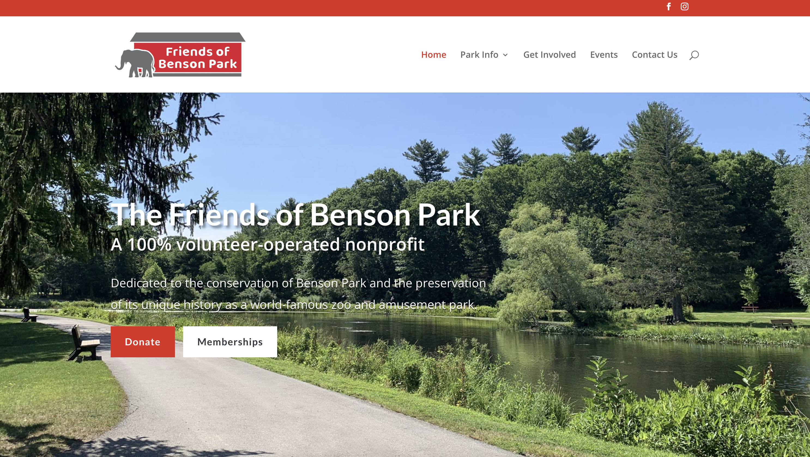
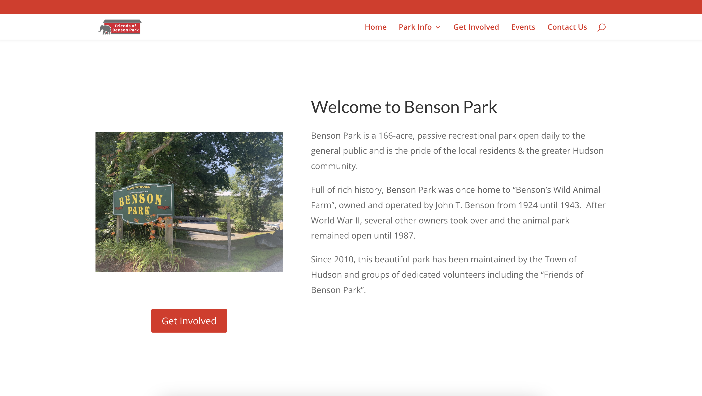
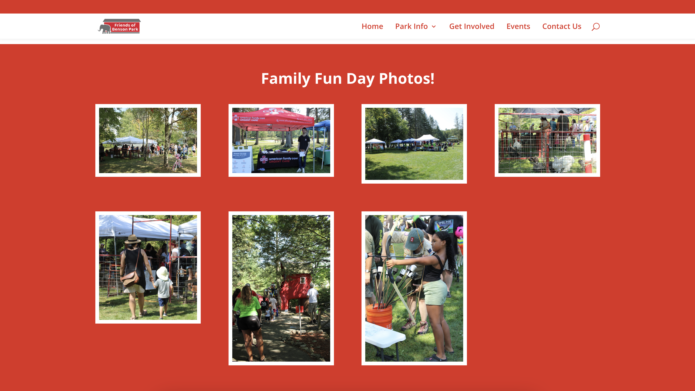
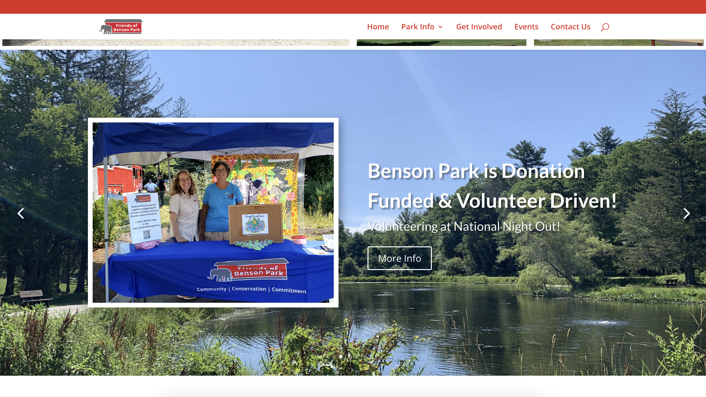
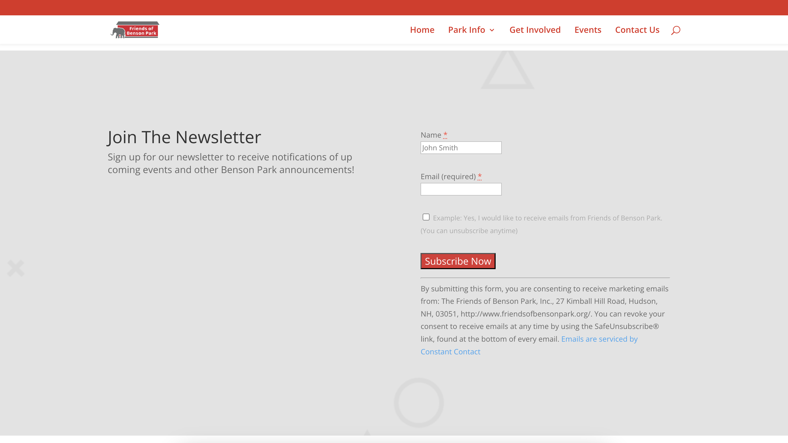
problems with the current design
The current website was evaluated using 4 criteria: efficiency, learnability, memorability, and the effectiveness of its conceptual model
Furthermore, the site was analyzed with the WebAIM WAVE tool to detect accessibility issues pertaining to the text and backround contrast, voice-over capabilities, and errors
| Issue Category | Usability Issues | Explanation |
|---|---|---|
| Efficiency |
|
|
| Learnability |
|
|
| Memorability |
|
|
| Conceptual Model |
|
|
analyzing WebAIM WAVE results
I do agree with a majority of the WebAIM WAVE's analysis of the website's accessibility problems
For instance, I noticed that none of the images have alt-text, which I also discovered when using voice-over on my Mac
Furthermore, there are approximately 15 contrast errors due to the white text on the saturated images, dark gray text on the light gray background, along with the cherry red and white text combination
In terms of both visual and accessibility standards, the Friends of Benson Park website needs a major overhaul to fix the accessibility issues
the redesign
Based on the usability evaluation and accessibility analysis, I created a redesign that addresses these issues while maintaining the website's core functionality
creating a visual design style guide
To create a more cohesive and user-friendly experience, I created a visual style guide to ensure consistency and accessibility
The visual style guide includes the website's color palette, typography, buttons, etc.
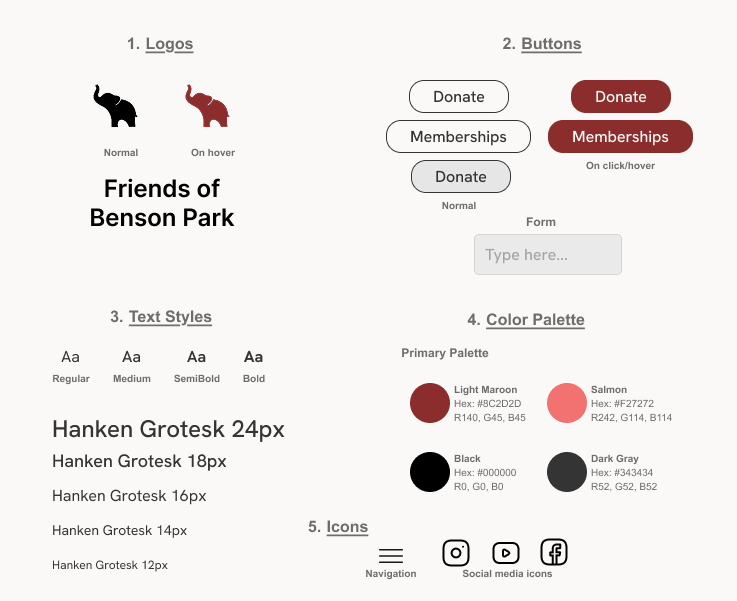
mockups
In order to build and develop a responsive website, I created 3 mockups of the webpage: desktop, tablet, and mobile
desktop🔗
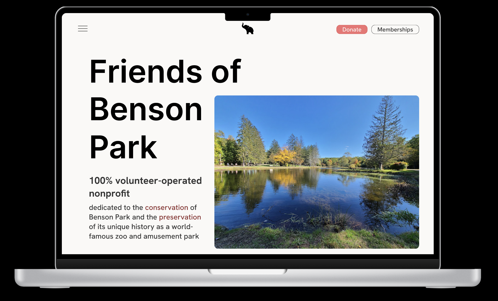
tablet🔗
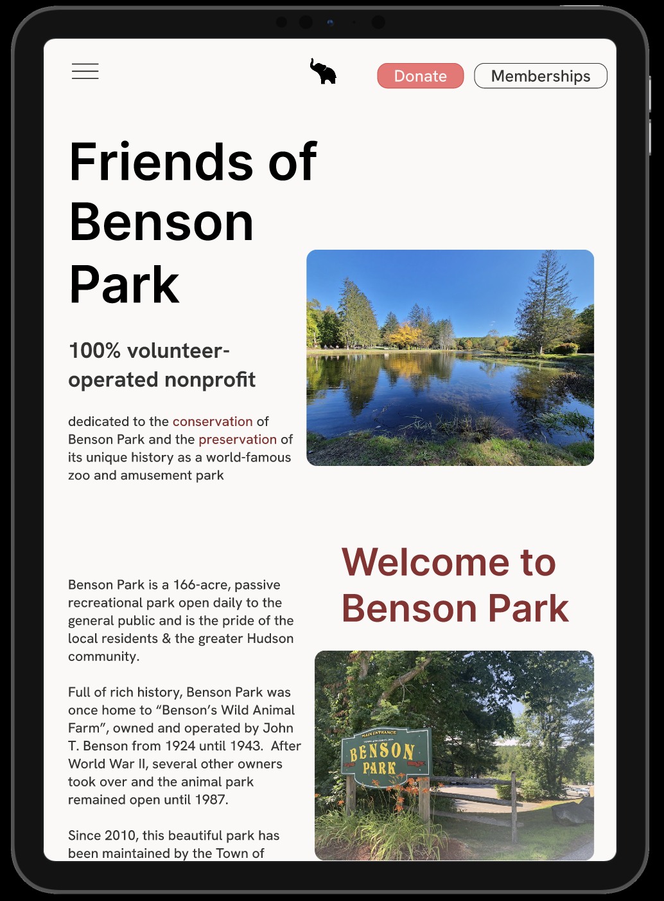
phone🔗
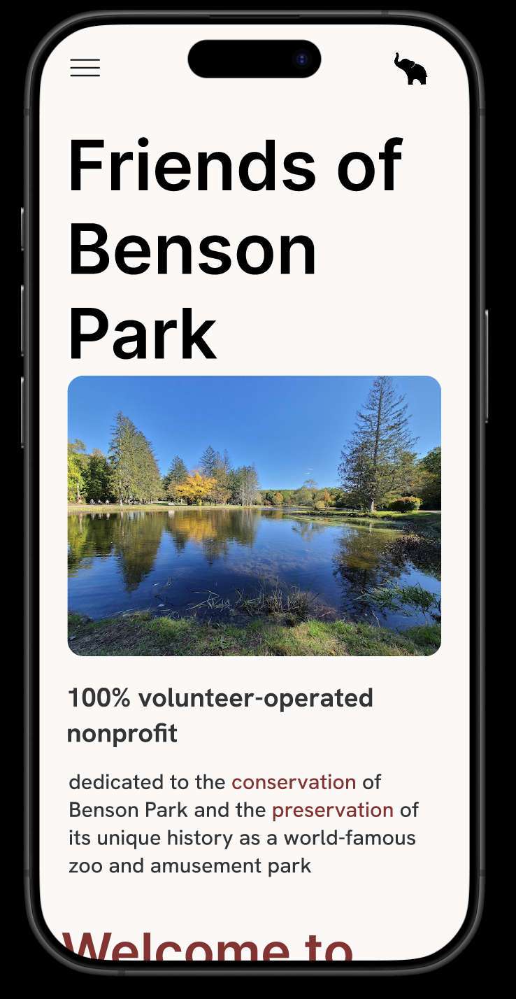
I then annotated each mockup with the key elements used and different layout choices
annotated desktop mockup🔗
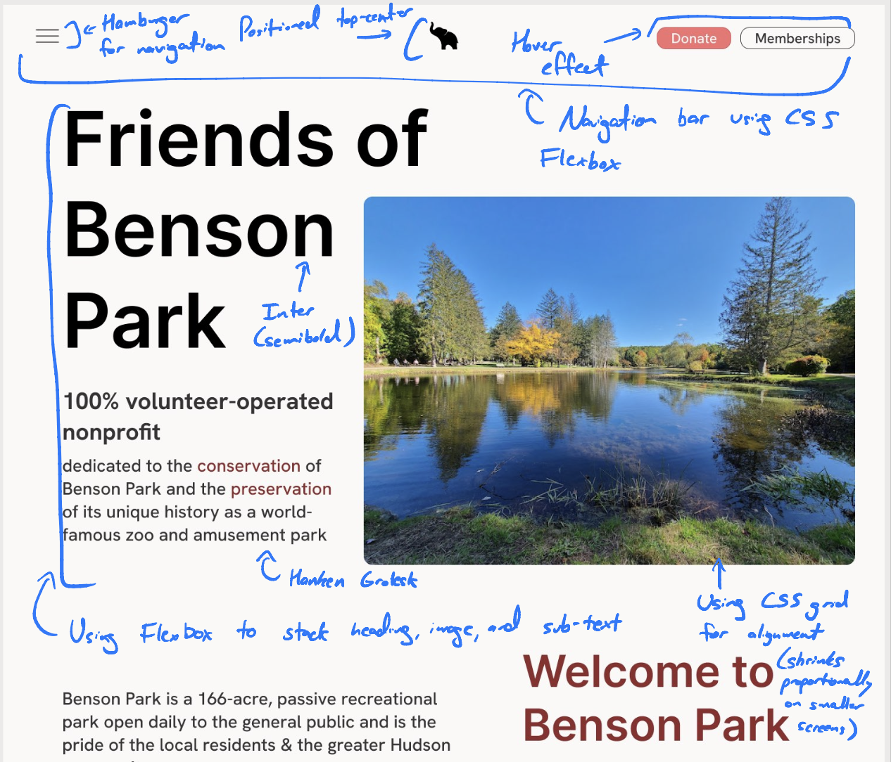
annotated tablet mockup🔗
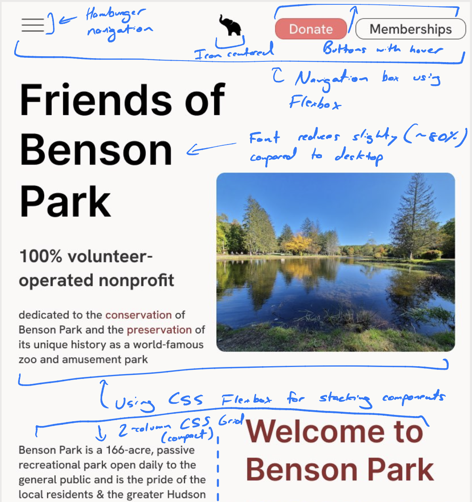
annotated phone mockup🔗

the new and improved website🔗
Using all that I've learned regarding the accessibility issues with the current Friends of Benson Park website, I created a new website that is more user-friendly, accessible, and visually appealing—all while working on different screen sizes